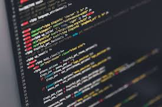

TEKNIK INFORMATIKA
Pada tahun 2010berdasarkan kebutuhan masyarakat dan industri terkait program diploma IV bidang informatika maka polinema mendirikan program studi baru Diploma IV Teknik Informatika. Pada awal berdirinya jumlah peserta didik program D-IV Ti hanya terdiri dari 46 mahasiswa, namun pada tahun 2015 jumlah perserta didik telah mengalami peningkatan menjadi 545 mahasiswa
perkembangan jumlah mahasiswa yang sangat pesar baik di prodi D-III MI maupun D-IV TI mendorong pimpinan di polinemam untuk menyatukan kedua prodi tersebut dalam satu organisasi jurusan baru terpisah dari jurusan elektro. dan pada tahun 2015 berdasarkan sk direktur nomor 53 dalam rangka penungkatan mutu pengolahan dan optimasi sumber daya dibentuklah jurusan teknologi informasi (JTI) dengan prodi D-III MI dan D-IV TI.